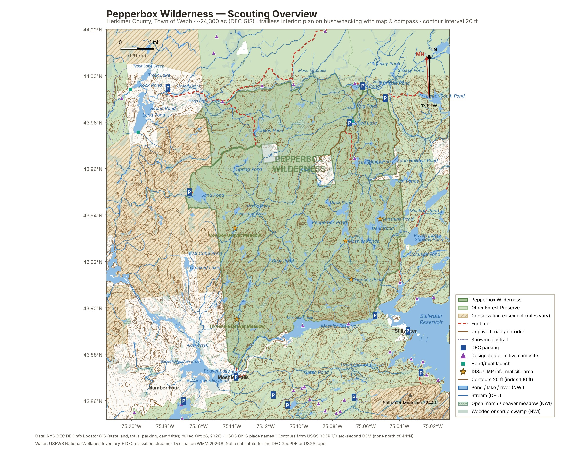
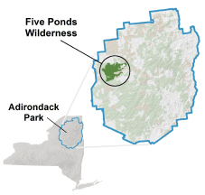

Day trip · Scouting for hammock sites · Town of Webb, Herkimer County (western Adirondacks)
GoalDay trip, no overnight. Scout the Pepperbox for hammock sites for a future overnight and log at least one site in the campsite log below.
The areaRoughly 24,300 acres by current DEC GIS (22,560 in the 2015 plan amendment), the smallest Wilderness in the Adirondack Park. Bounded by Stillwater Reservoir and the Beaver River on the south and Raven Lake Road on the east. Almost no trails: only three short official trails reach in, and everything else is bushwhacking. Rolling to steep ground with rock ledges and talus, 100–400 ft ridges, from about 1,430 ft along the western creeks to a high point near 2,170 ft just north of Cropsey Pond. The eastern half sits on a plateau around 1,900–2,000 ft; the west drops toward the Beaver River. The low ground is beaver meadows, alder swamp, and dozens of small ponds, most of them acidic. Gregg Lake, Tied Lake, Deer, Sunshine and the Moshier Ponds hold brook trout.
HuntingNorthern Zone regular deer season runs Oct 24 – Dec 6, 2026, and bear season is open in WMU 6J. All of the Pepperbox is open to hunting, and hunters use the old informal campsites in fall. Wear blaze orange.
DaylightClocks fall back Sun Nov 1. After that, sunset is around 4:45–4:50 PM EST est. Plan to be back at the car by 4:00. Weather: pull a forecast for Stillwater, NY once the date is set.
RoadsBear Pond Road and the first mile of the Tied Lake corridor are open to vehicles in summer and fall; both are rough dirt. Snow can come early here. Call DEC Lowville (315) 376-3521 before driving to confirm Bear Pond Rd is open and passable. Moshier Road off Number Four Road is the year-round option.
SignalExpect little or no cell service est. Leave the plan and a turnaround time with someone, and load the GPX below onto your Garmin before you go.
Camping rulesAt-large camping 150+ ft from any road, trail, or water. Permit needed for more than 3 nights. DEC-designated sites carry a yellow “Camp Here” disc and are first come, first served; DEC lists them as tent sites. Pack out trash; bury waste. Baitfish are banned on all brook-trout waters.
Private landThree private inholdings sit inside the Wilderness, reached by unmarked corridors. Using the corridors is fine up to the private boundary; don’t cross it.
ContactsDEC Region 6 Potsdam (315) 265-3090 · DEC Lowville sub-office (315) 376-3521 · Emergencies: 911 or 1-833-NYS-RANGERS (1-833-697-7264) · DEC page

Overview built from NYS DEC GIS (pulled Oct 26, 2026) with 20 ft contours (index every 100 ft) from the USGS 3DEP 1/3 arc-second DEM: Wilderness boundary, neighboring Forest Preserve and easements, trails, parking, designated campsites, named ponds, and the 1985 informal site areas (stars). Lat/long grid every 0.02°. The DEM tile stops at 44°N, so the strip along the top edge has no contours.

NYS DEC overview of the Five Ponds and Pepperbox Wildernesses (from the DEC web page).
The official DEC Pepperbox GeoPDF and the USGS quads couldn’t be downloaded from here, so they’re linked. The ADK Wilderness Advocates page also has the DEC map and 1915/1957 Number Four quads: adirondackwilderness.org.
Ten Essentials
6 of 10 covered by owned gear
| ✓ | Item | Weight | Essential |
|---|---|---|---|
| Pack | |||
| REI Co-op Flash 55 backpack, size M | ~1,190 g | — | |
| Navigation & Light | |||
| Compass (brand/model TBD) | ~30 gest. | Navigation | |
| Printed maps from this page (in a zip bag) | ~30 gest. | Navigation | |
| Black Diamond Cosmo 350 headlamp | 79 g | Illumination | |
| Water | |||
| Nalgene 32 oz wide-mouth bottle | 177 g | Hydration | |
| Sawyer Squeeze SP129 filter + two 32 oz pouches | ~145 gest. | Hydration | |
| Fire | |||
| Purple BIC lighter | ~20 g | Fire | |
| Überleben Hexa ferro rod, 1/2″ | 119 g | Fire | |
| Pill bottle, Vaseline-soaked cotton balls | ~33 gest. | Fire | |
| Telescopic pocket bellows | ~50 gest. | Fire | |
| Tools | |||
| Morakniv Companion, stainless, w/ sheath | ~160 gest. | Repair & Tools | |
| Madison Supply trauma shears (7.5″) | 150 g | Repair & Tools | |
| Curved hemostat, 6″ | 57 g | Repair & Tools | |
| Extras | |||
| Whistle | ~10 gest. | — | |
| Hand warmers, 2 bags (2-pack each) | ~110 gest. | — | |
| Wet naps, 6 individual packets | ~25 gest. | — | |
| Toilet paper, partial roll in zip bag | ~60 gest. | — | |
| Test-hang kit (optional) | |||
| ENO DoubleNest hammockoptional | 538 g | Shelter | |
| Warbonnet webbing/buckle suspensionoptional | 190 g | — | |
| Base weight, without water or food | ~2,445 g (5.4 lb) | +728 g with the hang kit | |
Everything here is owned gear from the inventory. Borrowed gear is left off unless you call it out. Add your own food and clothing layers.
| Item | Why |
|---|---|
| OFF! Deep Woods aerosol | Bugs are done this late in the season. |
| Bowl, spork, Sunwill mug, Cub Pillow | No cooking or sleeping on a day scout. |
| ~100 ft 550 paracord, Big Pig, Tarp Skins | No tarp pitch planned. Bring the paracord if you want spare cord. |
| Best Glide survival fishing kit | Gregg Lake holds brook trout, but there’s no rod yet and it needs a license. |
| Gap | Priority here | On wish list? | Why it matters for this trip |
|---|---|---|---|
| Blaze orange hat or vest | High | No | Deer and bear seasons are open, and hunters use the same interior campsites. |
| Garmin inReach | High | Yes | Trailless, remote, and likely no cell signal. Until you have one, leave a detailed plan and turnaround time with someone. |
| First aid kit (bespoke) | High | Yes | Ledges, talus and beaver-dam crossings off trail. The trauma shears and hemostat are a start, not a kit. |
| Waterproof paper map | Medium | Yes | The printed maps on this page cover it for now. Bag them or print on waterproof paper. |
| Trekking poles | Medium | Yes | Balance on beaver dams, wet meadows and stream crossings. |
| Hiking shoes (replacement) | Medium | Yes | Expect wet feet in the meadows; waterproof boots help. |
| Small power bank | Low | Yes | Keeps the phone alive for GPS and photos on a long drive-and-hike day. |
| Site | Location / GPS | Distance to road, trail, water | Trees | Ground & hazards | Verdict |
|---|---|---|---|---|---|
| No sites logged yet | |||||
What makes a site count: 150+ ft from roads, trails, and water; two healthy trees roughly 12–15 ft apart; no dead limbs overhead; out of low wet spots; room to stake out the tarp.